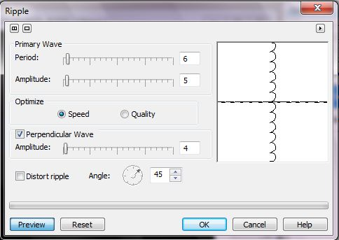

Создание магического знака
В общем-то этот простенький урок предназначен для начинающих пользователей и пожалуй польза от него в том, что он позволяет новичку быстро ознакомиться с разными командами и при этом даже получить какой-то результат, особо не лазя в дебри программы.
В качестве предполагаемого знака, возьмем готовое изображение (рис. 1), хотя можно и самому нарисовать что-то абстрактное (файл с этим символом прилагается к уроку, Untitled-1.rar). Сразу скажу, что желательно использовать какую-нибудь симметричную фигуру.
1. Создайте новый документ (Ctrl + N) с черным фоном. Размер можете выбрать по своему желанию, но я выбрал 360 х 540 мм с разрешением 96 dpi.
2. Откройте файл с символом. Чтобы отделить знак от белого фона в файле с символом, выберите инструмент Magic Wand Mask (Маска волшебной палочкой), нажав быструю клавишу W. На Панели свойств установите значение параметра Tolerance (Допуск) равным 1 и щелкните на белом фоне. Если выделится не весь белый фон, то выполните команду Mask > Mask Outline > Similar (Маска > Абрис маски > Подобное). Затем нажмите кнопку Invert Mask (Инвертировать маску) на Стандартной панели инструментов.
3. Скопируйте символ в Буфер обмена, перейдите в созданный на шаге 1 документ и вставьте символ. Если вы создали документ с размерами, как у меня, то вставленный символ будет слишком маленьким (рис. 2 слева), к тому же невиден на черном фоне. Как только вы вставите символ, он будет окружен управляющими маркерами. Потяните за угловой маркер, чтобы увеличить символ, как на рис. 2 справа.
4. Чтобы изменить цвет символа, создадим из него сначала маску (объект-символ должен оставаться выделенным), нажав Ctrl + M. Выберите инструмент Fill (Заливка) и установите цвет заливки – синий (или другой по своему усмотрению). Залейте символ (рис. 3).
5. Удалите маску, нажав Ctrl + R.
6. Выберите инструмент Ellipse Mask (Эллиптическая маска), нажав клавишу J. Создайте вокруг символа круглую маску.
7. Переключитесь на инструмент Paint (Кисть), нажав клавишу Р. На Панели свойств выберите кисть в форме звездочки (рис. 4) и измените размер, сделав его равным 30.
8. Щелкните на круглой маске правой кнопкой мыши и выберите в меню команду Brushstroke from Mask (Мазок кисти из маски). Не забудьте установить цвет краски таким же, как цвет символа (рис. 5). В открывшемся окне выберите верхний пункт (Middle of Mask Border) и нажмите ОК. Нажмите Ctrl + R, чтобы удалить маску.
9. Теперь продублируем объект, нажав Ctrl + D.
10. Выделите нижний объект в докере Objects (Объекты) и выполните команду Effects > Blur > Gaussian Blur (Эффекты > Размытость > Размытость по Гауссу). В окне фильтра установите значение Radius (Радиус) равным 5 px.
11. Выделите в докере Objects (Объекты) оба объекта и щелкните правой кнопкой мыши. В меню выберите команду Combine > Combine Objects Todether (Объединить > Объединить объекты).
12. Снова продублируем объект, нажав Ctrl + D. Выделите нижний объект и выполните команду Effects > Distort > Ripple (Эффекты > Искажение > Рябь). Настройки в окне фильтра показаны на рис. 6.

У вас должно получиться изображение, как на рис 7.
13. К нижнему объекту применяем фильтры Radial Blur (Радиальная размытость) и Zoom (Масштаб). Для этого выполните команду Effects > Blur > Radial Blur (Эффекты > Размытость > Радиальная размытость) и установите значение Amount (Величина) равным 3, а затем выполните команду Effects > Blur > Zoom (Эффекты > Размытость > Масштаб) и установите значение Amount (Количество) равным 19.
14. Снова продублируем нижний объект, нажав Ctrl + D. Теперь у вас должно быть 3 объекта. В докере Objects (Объекты), для среднего объекта выберите режим наложения Invert (рис. 8).
15. Теперь нам нужно объединить объекты. Выделите в докере Objects (Объекты) все три объекта и щелкните правой кнопкой мыши. В меню выберите команду Combine > Combine Objects Todether (Объединить > Объединить объекты).
16. Изменим положение объекта. Для этого можно было бы воспользоваться средством Photo-Paint – Перспектива, однако я использовал более удобный фильтр из набора Corel KPT Effects, а именно, KPT Projector. Понятно, что у вас должен быть установлен набор этих фильтров. Выполните команду Effects > KPT Collection > KPT Projector (Эффекты > KPT Collection > KPT Projector). В окне фильтра выберите настройки, как на рис. 9 или измените перспективу на свой вкус.
Результат показан на рис. 10.
17. Продублируем объект, нажав Ctrl + D.
18. Выделим нижний объект и применим к нему эффект Wet Paint (Жидкая краска). Выполните команду Effects > Distort > Wet Paint (Эффекты > Искажение > Жидкая краска) (рис. 11).
Результат показан на рис. 12.

19. Не снимая выделения с нижнего объекта выполните команду Object > Flip > Vertically (Объект > Перевернуть > По вертикали). Затем совместите оба объекта, т. к. после отражения нижнего объекта, он окажется немного ниже своего исходного положения.
20. В докере Objects (Объекты) выделите верхний объект и установите режим наложения – Hard Light. Затем объедините оба объекта. Для получившегося объекта выберите режим наложения Screen. Объедините объект с фоном. Конечный результат показан на рис. 13.
Конечный результат естественно зависит от выбранных режимов наложения, а также от цвета, который мы выберем при создании символа. Например, на рис. 14 показан результат, который получится при выборе на последнем шаге режима Lightness, вместо Screen. А на рис. 15 результат при выборе режима наложения Invert.